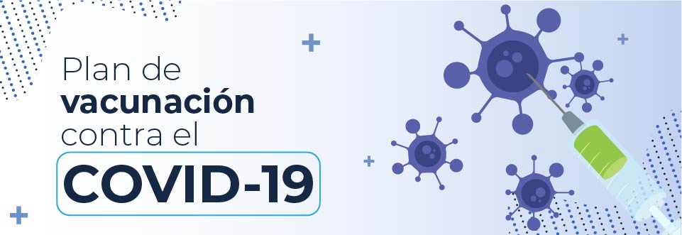

Vacunación contra COVID-19.
Colombia aseguró para sus ciudadanos las dosis de vacuna para el covid-19 necesarias a través de mecanismos bilaterales y multilaterales, con los cuales se tiene planeado vacunar a la población en 2 fases y 5 etapas, teniendo como priorización los grupos de riesgo y así progresivamente alcanzar 35 millones de colombianos vacunados.
De esta manera, el objetivo en el Plan Nacional de Vacunación contra el COVID-19 es en su primera fase reducir la mortalidad y la incidencia de casos graves por este virus, así como proteger a los trabajadores de la salud.
Preguntas mas frecuentes
¿Qué es la vacunación?
La vacunación es una forma sencilla, inocua y eficaz de protegernos contra enfermedades dañinas antes de entrar en contacto con ellas. Las vacunas activan las defensas naturales del organismo para que aprendan a resistir a infecciones específicas, y fortalecen el sistema inmunitario.
¿Cómo actúan las vacunas?
Las vacunas actúan mediante la simulación de los agentes infecciosos –virus, bacterias u otros microorganismos– que pueden causar una enfermedad. Esto “enseña” a nuestro sistema inmunitario a dar una respuesta rápida y eficaz frente al patógeno.
¿Que efectos secundarios causan?
Como todos los medicamentos, las vacunas pueden causar efectos secundarios leves —por ejemplo, fiebre baja, dolor o enrojecimiento en el lugar de inyección—, que desaparecen espontáneamente a los pocos días.